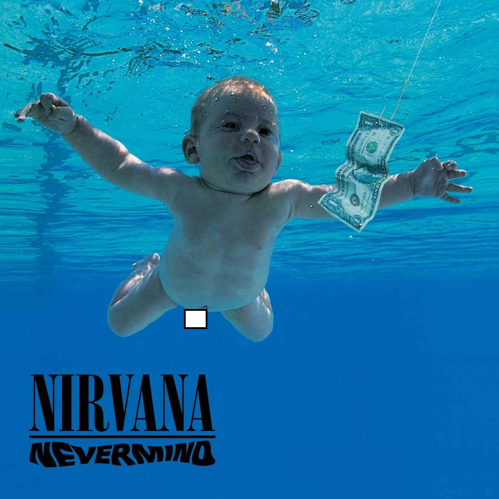

Nirvana war eine US-amerikanische Grunge-Band aus dem Bundesstaat Washington und wurde im Jahr 1987 von Kurt Cobain und Krist Novoselic gegründet.Große Popularität erreichte sie im Jahr 1991 mit dem Song "Smells Like Teen Spirit" sowie dem Album "Nevermind". Sieben Jahre nach der Gründung der Band sowie dem Suizid ihres Sängers und Songwriters Kurt Cobain löste sich die Band endgültig auf. Die Band spielte am 19. März 1987 erstmalig unter dem neuen Namen "Nirvana", nachdem einige Projekte vorher scheiterten. Kurt Cobain sagte später zur Namenswahl, er wollte einen schänen Namen und nicht einen solch ekelhaften Punkrock-Namen wie Angry Samons. Später war er über den Namen weniger glücklich und meinte, der Name sei zu esoterisch und zu ernst.
Ihr Debütalbum "Bleach" erschien am 9. Juni 1989, im Anschluss daran spielte die Band eine US-Tournee durch kleine Bars und Clubs. Am 25 September 1990 tritt Dave Grohl der Band bei. Das Album "Nevermind" wurde am 24. September 1991 publiziert und stieg im Oktober in die US-Charts ein. Am 4. November folgte die Veröffentlichung von "Smells Like Teen Spirit". Hierfür wurde Nirvana bereits nach einem Zeitraum von vier Wochen die Platin-Schallplatte für eine Million verkaufter Exemplare verliehen. Selbst Michael Jackson wurde mit seinem Album "Dangerous" von Nirvana entthront.
"Incesticide" erschien im Januar 1993 und bestand aus zusammen gestellten Aufnahmen von B-Seiten sowie unveröffentlichtem Material, um die unvorhersehbar gestiegene Nachfrage nach einem weiteren Album befriedigen zu können. Die Band setzte im Februar 1993 mit dem Produzenten Steve Albini die Arbeiten zu dem neuen Album fort, welches den Arbeitstitel "I Hate Myself and I Want To Die" trug. Das Label DGC reagierte auf die Aufnahme negativ. Albini erklärte später, dass das Management und Label Albini nicht als Produzent der Band haben wolle. Diesbezüglich konnte sich Nirvana jedoch durchsetzen. Nachfolgend machten Nirvana ausschließlich aufgrund zahlreicher drogenbedingter Festnahmen, Rehabilitationsversuchen von dem heroinabhängigen Cobain sowie Gefängnisstrafen Negativschlagzeilen.
Die Single "Heart Shaped Box" erschien am 11. September und das Album "In Utero" folgte am 25. September und belegte in den UK-Charts Platz eins.Nirvana spielten am 8. Januar 1994 ihr letztes Konzert in der Center Arena von Seattle. Der Rolling Stone zeichnete sie in den Music Awards "Critics Picks" als "Best Band" sowie das Album "In Utero" als "Best Album" aus. Nirvana starteten am 6. Februar in Cascais ihre Europa-Tournee. Ursprünglich war als Tournee-Ende der 8. April in Dublin geplant. Nirvana spielte jedoch ihr letztes Konzert im Terminal eins des ehemaligen Flughafen München-Riem am 1. März, welches in Ausschnitten auf VIVA gesendet wurde. Kurt Cobain flüchtete nach einem Krankenhausaufenthalt am 1. April aus dem Exodus Recovery Center in Marina del Ray in Los Angeles. Damit brach er seinen letzten Versuch des Drogenentzugs ab. Am 8. April 1994, eine Woche später, wurde er in seiner Garage tot aufgefunden.
Quelle: www.was-war-wann.de
| Albumcover | Name | Erscheinungsdatum | Produzent/Label | Jetzt Kaufen/Anhören |
|---|---|---|---|---|
|
Bleach | 15. Juni 1989 | Jack Endino | Amazon / Spotify |
|  | Nevermind | 24. September 1991 | Butch Vig | Amazon / Spotify |
| Incesticide | 14. Dezember 1992 | DGC Records | Amazon / Spotify | |
|
In Utero | 21. September 1993 | Steve Albinis | Amazon / Spotify |
| Best Of | 29. Oktober 2002 | Geffen (Universal Music) | Amazon / Spotify |
Am 30. Jänner 1994 war Nirvana das letzte mal zusammen im Studio um Songs aufzunehmen. Kurz bevor die Band das Studio verlassen wollte, nahmen sie sich noch 3 minuten Zeit um einen Song zu spielen. Dieser wurde mit dem Titel "Kurt's Song #1" gespeichert und kam auf Grund von Rechtsstreitigkeiten erst im Jahre 2002 (8 Jahre nach dem Tod von Kurt Cobain) mit der Best Of CD auf den Markt.